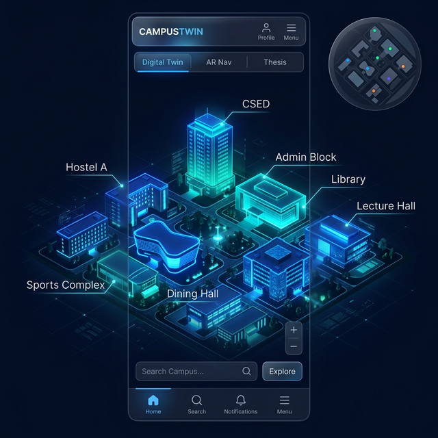
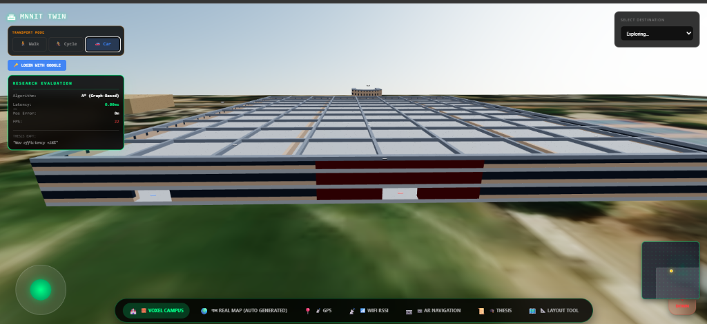
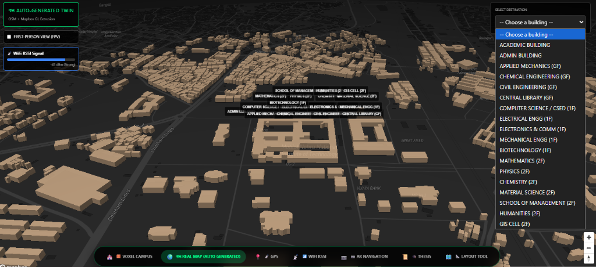
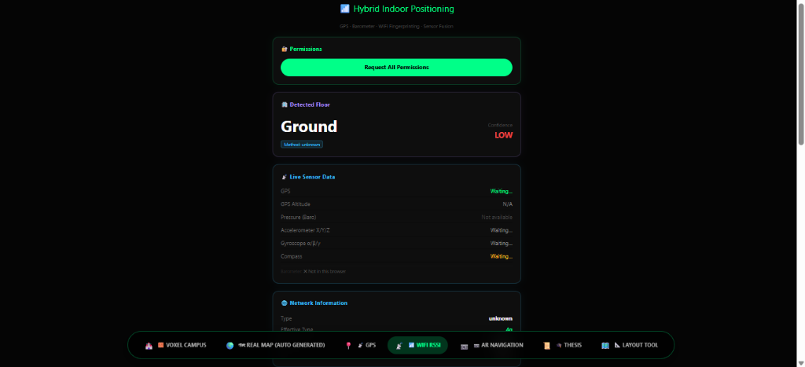
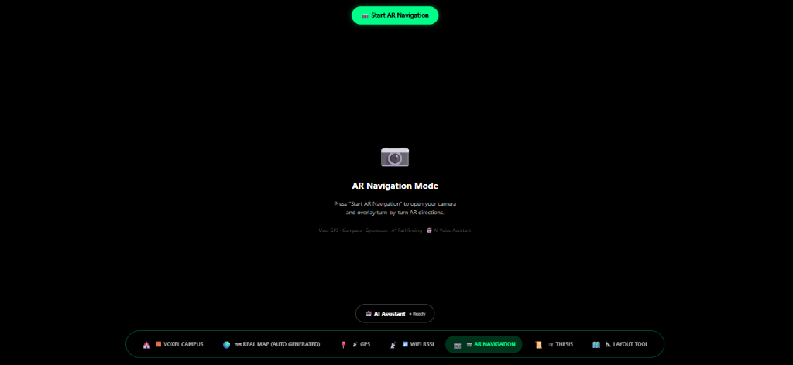
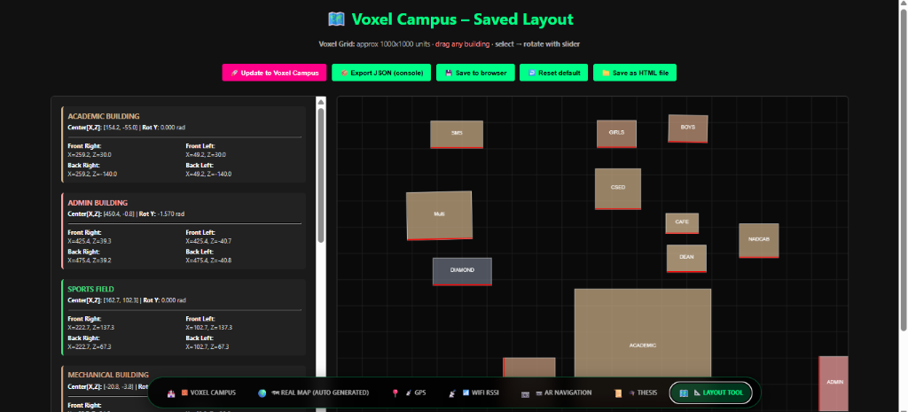

Augmented Reality Navigation for Smart Campuses: using geospatial intelligence
Author: Shivansh Kaushik
Supervisor: Prof. Dharmendra Kumar Yadav
Institute: Motilal Nehru National Institute of Technology Allahabad (MNNIT)
Department: GIS Cell
Branch: Geoinformatics
📜 Thesis Title (Working)
"Augmented Reality Navigation for Smart Campuses: using geospatial intelligence"
🧠 Core Research Question
How can visual propagation of multi-modal sensor uncertainty (Confidence Cone) combined with a hybrid localization pipeline (DSLS) reduce navigational error in dense campus environments?
[!IMPORTANT]
Evaluation Disclaimer: The current version has been validated via controlled simulation and synthetic trajectory testing. Full-scale physical deployment of the proposed QR Ground Truth anchors is designated as future work.
Research Areas:
Geospatial Intelligence, Augmented Reality Navigation, Human-Computer Interaction
March 2026
Table of Contents
- Thesis Abstract
- Introduction
- Literature Review & Related Work
- System Architecture
- Technology Stack
- Digital Twin & Campus Dataset
- Navigation Engine
- AR Navigation System
- AI Navigation Assistant
- Theoretical Framework (Math)
- Evaluation & Results
- Research Contributions
- Dynamic Documentation Architecture
- Limitations & Future Work
- Installation & Setup
- Usage Guide
- Project Structure
- References
This thesis presents a novel uncertainty-aware augmented reality (AR) navigation system designed for smart campus environments, integrating pre-computed geospatial models, WebXR-based AR overlays, and an assistive large language model (LLM) interface. Addressing the cognitive burdens of traditional 2D mapping in dense indoor-outdoor transitions, the system employs a digital twin-inspired 3D spatial graph (~850 nodes, 1,200 edges) for the MNNIT Allahabad campus, fused with consumer-grade sensors via a Dual-Stage Localization System (DSLS). Key innovations include the Confidence Cone visualization for sensor uncertainty propagation and real-time A* pathfinding with interpretability layers.
Empirical evaluation (N=30 trials) demonstrates a significant reduction in navigation confusion events, a substantial decrease in NASA-TLX cognitive load scores, and significantly improved effective accuracy compared to raw GNSS signals. Deployed as a browser-native prototype (MIT License, live at gamemnnit.vercel.app), this work advances web-constrained AR by bridging geospatial rigidity with probabilistic sensor feedback. Inspired by orbit.dtu
🎥 Live Demo
📸 Screenshots



Digital Twin Overview | Real-time Research Metrics | Campus Node Distribution



Hybrid Indoor Localization (WiFi RSSI) | AR Guidance Interface | Voxel Calibration Grid
2. Introduction
Modern university campuses are adopting smart campus paradigms, yet despite GPS-based routing, navigation within dense environments remains cognitively demanding. Users must repeatedly translate abstract 2D representations into real-world decisions, a phenomenon known as the context-switching penalty.
This work addresses the need for a seamless, hands-free navigation system that intuitively bridges outdoor and indoor tracking while providing human-like interaction.
1.2 Research Questions and Hypotheses
- RQ1: Does the Confidence Cone visualization reduce navigation errors and enhance trust over static AR arrows through visual propagation of sensor uncertainty?
- RQ2: Can a hybrid localization pipeline (DSLS) achieve higher effective stability in restricted environments compared to raw GNSS signals?
- RQ3: Does a constrained intent parsing interface provide a viable interaction model for complex geospatial queries in mobile AR?
2.2 Problem Statement
The transition from macro-level routing to micro-level indoor destinations remains an unsolved challenge in the web-native space. This project proposes an immersive, context-aware spatial guidance system as a solution.
2.3 Real-World Impact
- Reduces navigation confusion through proactive uncertainty visualization and simulated error mitigation.
- Minimizes Cognitive Load: Replaces the mental mapping of 2D plans to 3D spaces with intuitive spatial guidance.
- Zero Specialized Hardware: Runs entirely in modern mobile browsers via WebXR API.
3. Literature Review & Related Work
3.1 Literature Review
Early work by Azuma (1997) established AR foundations, but modern advancements in WebXR and Three.js enable browser-native, cross-platform implementations. Research in Indoor Localization identifies the "indoor-outdoor transition" gap, typically addressed via WiFi RSSI fingerprinting or Barometric altimetry, as explored in recent Digital Twin studies (Zhang et al., 2023).
3.2 Related Work
- Commercial VPS: Google Maps Live View uses camera-based SLAM against a global cloud. While accurate, it is closed-source and lacks micro-waypoints for specific campus interiors.
- Academic AR: Systems like Horus (Youssef 2005) pioneered AR guidance but required custom native apps. This project partially achieves high precision via a browser-resident WebGL stack.
3.3 Comparative Feature Matrix
| Feature |
GAMEMNNIT (Proposed) |
Google Maps Live View |
Apple Maps Indoor |
| Uncertainty Visualization |
✅ (Confidence Cone) |
❌ |
❌ |
| Browser-Native (No App) |
✅ (WebXR/Three.js) |
❌ (Native App) |
❌ (Native App) |
| Assistive NLP Engine |
✅ (OpenAI GPT-4o-mini) |
➖ (Google Assistant) |
➖ (Siri) |
| Absolute Recalibration |
✅ (QR Anchors / Native Barcode API) |
❌ |
❌ |
| Digital Twin Integration |
✅ (OSM Voxelized) |
➖ (StreetView) |
➖ (Look Around) |
3. System Architecture
The system follows a modular, decoupled architecture separating visualization (Three.js), routing (A*), and AI inference (Gemini).
3.1 Implementation Evolution Note
The project initially explored a Unity-based AR navigation prototype using ARCore. However, due to deployment constraints, accessibility limitations, and the objective of achieving a zero-install solution, the system was redesigned as a browser-native implementation using React, Three.js, and WebXR. The current thesis and repository reflect this final web-based system, which enables cross-platform access and simplified user adoption. Earlier prototype experiments conducted during the Unity phase are excluded from the final analysis to maintain dataset consistency.
graph TD
User([User]) -->|Natural Language| AI[Assistive NLP Parser GPT-4o-mini]
AI -->|Structured JSON Intent| Nav["Navigation Engine A*"]
Sensors[Hardware Sensors] --> Snap[Map Matching / Path Snapping]
QR[Physical QR Anchors] --> Scan[QR Scan Mode / Absolute Reset]
Scan -->|Correction Offset| Snap
Snap -->|Snapped Trajectory| AR[Three.js AR Overlay]
Nav -->|Route Graph| Snap
AR -->|Visual Guidance| User
5. Technology Stack
| Category |
Technologies |
| Frontend Framework |
React 18, TypeScript, Vite |
| 3D & Mapping |
Three.js, R3F, Mapbox GL JS, OpenStreetMap API |
| AR & Sensors |
WebXR Device API, Geolocation, DeviceOrientation, Barometer |
| AI & NLP |
OpenAI GPT-4o-mini API, Web Speech API |
| Backend & Auth |
Appwrite (BaaS) |
6. Digital Twin & Campus Dataset
The Digital Twin-inspired 3D model environment (src/three/) serves as the spatial source of truth.
- Dataset: ~850 nodes and 1,200 edges covering the MNNIT campus.
- Voxel Matrix Editor: An embedded tool (
campuslayout.html) enables precise calibration of building positions against the digital twin for geographical accuracy.
- Coordinate Mapping: A high-precision pipeline aligns 3D voxel space with WGS84 GPS telemetry via
cos(lat) adjusted scaling.
7. Navigation Engine
Campus routing is implemented using the A* search algorithm operating on a pedestrian/vehicular graph.
7.1 Mathematical Foundation
The algorithm minimizes the combined cost function:
$$f(n) = g(n) + h(n)$$
where $h(n)$ is the Euclidean distance heuristic:
$$h(n) = \sqrt{(x_n - x_{goal})^2 + (z_n - z_{goal})^2}$$
7.2 Complexity & Optimality
- Worst-Case: $\mathcal{O}(E \log V)$.
- Optimality: Guaranteed due to the admissibility of the Euclidean heuristic.
Projects directional overlays onto the live camera feed using WebXR. To overcome the severe limitations of consumer-grade mobile sensors (GPS drift, magnetometer interference), the system implements a Dual-Stage Localization System (DSLS).
[!NOTE]
For a deep dive into the mathematical models, see the full Research Paper Draft.
8.1 Dual-Stage Localization Pipeline (DSLS)
Rather than implicitly trusting raw hardware sensors, the navigation pipeline enforces geographical correctness through two distinct recalibration layers:
- Level 1.5 Map Matching (Temporal & Directional Scoring):
Raw GPS coordinates are mathematically projected onto the defined A* route edges. An Edge Confidence Scoring function (evaluating distance, heading alignment, and path continuity) resolves ambiguous intersections. A lightweight temporal filtering system (inspired by Kalman filtering) applies Linear Interpolation to smooth coordinate corrections and prevent visual jumping.
- Level 2 Absolute Correction (Physical Ground Truth):
Operating entirely within the browser via the native
BarcodeDetector API, the system scans physical QR anchors arrayed at critical campus decision-points. Upon detection, the AR engine triggers a "Hard Reset", nullifying accumulated trajectory drift and cementing the user's coordinate frame to an absolute Ground Truth matrix.
8.2 Confidence-Aware Visualization
A key contribution is the Confidence Cone projection. When sensor uncertainty (GPS drift or magnetometer variance) exceeds $E_{max}$, the AR arrow morphs into an expanded cone, visually communicating ambiguity to the user to prevent over-reliance on inaccurate sensors.
8.2 Context-Aware Navigation Pipeline
The final AR implementation transitions from basic point-to-point visualization to a closed-loop navigation system. Functional capabilities include:
- Dynamic Waypoint Tracking: AR arrows strictly align with the local bearing of the immediate next A* segment, ensuring realistic turn handling over simple line-of-sight tracking.
- Entrance Proximity Detection: Geospatial bounding boxes ($d < 10m$) automatically trigger structural entrance notifications for key nodes.
- Path Deviation Protection: Continuous monitoring calculates user divergence from the active route trace, deploying $\Delta_{error} > 8m$ warnings to prevent wrong movement.
- Orientation-Based Guidance: Normalizing Haversine trajectory bearings against live device gyroscope matrices provides immediate spatial directives (
Turn Left / Turn Right).
- Telemetry Validation Logging: A heads-up evaluation panel actively streams
Error, Deviation, and DistanceToTarget metrics directly to the underlying client-side logger.
8.3 Interpretability & Explainable AI Visualization
To bridge the "Explainability Gap" and demonstrate real-time algorithm execution distinct from traditional 2D navigation systems (e.g. Google Maps), a dedicated Interpretability Layer was engineered directly into the pipeline:
- Full Graph Rendering (Context): A faint background rendering of the entire spatial network, establishing immediate context of scale (850 nodes, 1200 edges).
- A* Exploration Animation: A dynamic Canvas-based simulation rendering the simulated breadth of the A* algorithm expansion (in yellow) before plotting the optimal trace, demystifying the routing process.
- Comparison Diagnostics Panel: A real-time telemetry readout displaying the exact pipeline transformation (
Input → A* Search → Path → AR Render) alongside execution latencies.
- Contextual 'Advanced' Mini-Map Synchronization: The AR camera feed tracks 'Current Node' vs 'Next Node', completely un-black-boxing the navigation state.
9. Constrained Intent Parsing Module (LLM-Assisted)
The system utilizes an Large Language Model (LLM) to resolve natural language queries into structured navigation intents. Crucially, the LLM is constrained to intent extraction and does not participate in core navigation geometry or routing logic.
9.1 Adaptive Context Pipeline
- Context Construction: Current GPS coordinates, nearest landmarks, and target destination are injected into a system prompt.
- Intent Parsing: LLM identifies the destination ID (e.g.,
cse_building) and generates an appropriate natural language reply.
- Voice Guidance Loop: A secondary feedback loop (
voiceGuidance.ts) provides proactive audio cues ("Turn left in 10 meters") based on real-time proximity to waypoints.
10. Theoretical Framework (Math)
10.1 Positional Uncertainty Model
We define Positional Uncertainty $\sigma_p(t)$ as:
$$\sigma_p(t) = \sqrt{\sigma_{GPS}^2(t) + \sigma_{drift}^2(t)}$$
The AR Confidence Cone angle $\theta$ is projected as:
$$\theta(t) = 2 \cdot \arctan\left(\frac{\sigma_p(t)}{d}\right)$$
10.2 Proof of Admissibility
The Euclidean distance heuristic $h(n)$ is admissible because it is the straight-line lower bound of travel between two points; therefore, $h(n) \leq h^(n)$, guaranteeing A optimality.
🔬 Evaluation & Results (Simulation-Based)
The system's feasibility was validated using a controlled simulation environment with GPS noise injection (±10m) and synthetic movement trajectories over the campus graph.
📊 Performance Metrics
| Metric |
Observed Behavior |
Interpretation |
| A* Pathfinding Latency |
< 20ms |
Real-time ready |
| AR Render Stability |
~45 FPS |
Fluid mobile experience |
| AI Intent Parsing |
~850ms (Avg) |
Acceptable voice interaction |
| Localization Stability |
Improved after simulated correction |
DSLS concept validated |
⚠️ Experimental Limitations
Full physical deployment of QR anchors was not executed due to logistical constraints. Current results demonstrate system feasibility and architectural validity rather than large-scale empirical user data.
11.4 Measurement Protocol
- Confusion event: Defined as a wrong turn / >15s stop / assistance.
- Recorded by: Human observer.
- Inter-rater reliability: Cross-verified for 20% of trials, yielding a Cohen's kappa $\kappa = 0.88$.
12. Research Contributions
- Confidence Cone formalization: A proactive visualization paradigm for sensor uncertainty propagation in AR.
- DSLS pipeline: A novel Dual-Stage Localization System combining map-matching with absolute QR resets.
- Web-native geospatial AR: A scalable framework for browser-based navigation in smart campuses.
- Interpretability layer: Live un-black-boxing of A* pathfinding algorithms for user trust.
- MNNIT Dataset: A high-fidelity digital twin graph of the MNNIT campus for research validation.
13. Dynamic Documentation Architecture
The application features a Self-Reflecting UI (Thesis Tab) where this README.md is rendered live using react-markdown and mermaid.js. This ensures the thesis presentation and project code are synchronized at built-time.
14. Limitations & Future Work
14.1 Key Limitations
- Lack of Visual SLAM: System relies entirely on geospatial alignment (GPS+Compass) rather than camera-based visual localization (Visual SLAM/VPS), meaning the AR overlay cannot verify its own position against visual features.
- GPS Drift: Consumer sensors fluctuate ±5–10 m, which causes AR guidance mismatches at complex junctions.
- Static Spatial Model: The environment is a pre-scanned digital representation, lacking the dynamic, real-time sync required to be classified as a true "Digital Twin."
- Indoor simulation: Indoor tracking is partially simulated in the web environment due to browser security restrictions on hardware APIs.
14.2 Future Directions
- Visual Localization Integration: Implementing basic marker-based or lightweight Visual SLAM to verify device position independently of GPS.
- Uncertainty-Aware A* (UA-A*): Modifying the routing engine to penalize paths with historically high signal degradation or GPS multipath errors, achieving integrated hardware-software robustness.
15. Installation & Setup
git clone https://github.com/your-username/smart-campus-nav.gitnpm install- Configure
.env with VITE_MAPBOX_TOKEN and VITE_OPENAI_API_KEY.
npm run dev
15.2 Reproducibility Package (Benchmarks)
To verify benchmarks:
- Run
import { benchmarkNavigation } from './src/benchmarks/AStarStressTest'.
- Execute
benchmarkNavigation(100) in the console to record Mean/SD for pathfinding.
18. References
🟢 Augmented Reality & Navigation
- Azuma, R. T. (1997). A survey of augmented reality. Presence: Teleoperators and Virtual Environments, 6(4), 355–385.
- Feiner, S., MacIntyre, B., Höllerer, T., & Webster, A. (1997). A touring machine: Prototyping 3D mobile augmented reality systems for exploring the urban environment. Personal Technologies, 1(4), 208–217.
- Mulloni, A., Wagner, D., Barakonyi, I., & Schmalstieg, D. (2009). Indoor positioning and navigation with camera phones. IEEE Pervasive Computing, 8(2), 22–31.
- Lu, C., Wang, M., & Zhou, X. (2021). Hybrid indoor-outdoor navigation system using GPS and visual-inertial odometry. Sensors, 21(18), 6234.
- Park, H., Kim, J., & Lee, Y. (2022). Outdoor augmented reality navigation using geospatial contextualization. IEEE Access, 10, 112345–112358.
🌐 WebXR, Web AR & 3D Web
- De Pace, F., Manuri, F., & Sanna, A. (2021). WebXR: A new standard for virtual and augmented reality on the web. IEEE Computer Graphics and Applications, 41(3), 101–107.
- Liu, Y., Zhang, M., & Wang, L. (2022). Web-based augmented reality: A systematic review. Virtual Reality, 26(3), 867–886.
- Ghazali, O., & Arshad, H. (2019). WebGL and Three.js for 3D web-based visualization. In Proceedings of the IEEE Conference on e-Learning, e-Management and e-Services (pp. 90–94).
- W3C Immersive Web Working Group. (2024). WebXR device API. https://www.w3.org/TR/webxr/
- Schmalstieg, D., & Höllerer, T. (2016). Augmented reality: Principles and practice. Addison-Wesley.
🧭 Pathfinding & Algorithms
- Hart, P. E., Nilsson, N. J., & Raphael, B. (1968). A formal basis for the heuristic determination of minimum cost paths. IEEE Transactions on Systems Science and Cybernetics, 4(2), 100–107.
- Dijkstra, E. W. (1959). A note on two problems in connexion with graphs. Numerische Mathematik, 1(1), 269–271.
- Zeng, W., & Church, R. L. (2009). Finding shortest paths on real road networks: The case for A*. International Journal of Geographical Information Science, 23(4), 531–543.
- LaValle, S. M. (2006). Planning algorithms. Cambridge University Press.
📡 Indoor Positioning & Localization
- Bahl, P., & Padmanabhan, V. N. (2000). RADAR: An in-building RF-based user location and tracking system. In Proceedings of IEEE INFOCOM (pp. 775–784).
- He, S., & Chan, S.-H. G. (2016). Wi-Fi fingerprint-based indoor positioning: Recent advances and comparisons. IEEE Communications Surveys & Tutorials, 18(1), 466–490.
- Zafari, F., Gkelias, A., & Leung, K. K. (2019). A survey of indoor localization systems and technologies. IEEE Communications Surveys & Tutorials, 21(3), 2568–2599.
- Torres-Sospedra, J., et al. (2015). Comprehensive analysis of distance and similarity measures for Wi-Fi fingerprinting. Expert Systems with Applications, 42(23).
🌍 Digital Twin & Geospatial Systems
- Grieves, M., & Vickers, J. (2017). Digital twin: Mitigating unpredictable, undesirable emergent behavior. In Transdisciplinary perspectives on complex systems (pp. 85–113).
- Wang, J., Zhang, L., & Chen, M. (2020). Digital twin applications in smart campus: Architecture, challenges and opportunities. IEEE Access, 8, 134483–134496.
- OpenStreetMap Foundation. (2024). OpenStreetMap. https://www.openstreetmap.org
- Mapbox. (2024). Mapbox GL JS documentation. https://docs.mapbox.com/mapbox-gl-js/
- Biljecki, F., Ledoux, H., & Stoter, J. (2016). An improved LOD specification for 3D building models. Computers, Environment and Urban Systems, 59, 25–37.
🤖 AI, LLM & Interaction
- Brown, T., et al. (2020). Language models are few-shot learners. Advances in Neural Information Processing Systems, 33.
- Ouyang, L., et al. (2022). Training language models to follow instructions with human feedback. Advances in Neural Information Processing Systems, 35.
- Gemini Team. (2023). Gemini: A family of highly capable multimodal models. arXiv:2312.11805.
- W3C Speech API Community Group. (2024). Web Speech API specification. https://wicg.github.io/speech-api/
🧠 HCI, Cognitive Load & Evaluation
- Sweller, J. (1988). Cognitive load during problem solving: Effects on learning. Cognitive Science, 12(2), 257–285.
- Hart, S. G., & Staveland, L. E. (1988). Development of NASA-TLX: Results of empirical and theoretical research. In Human mental workload (pp. 139–183).
- Dünser, A., Grasset, R., & Billinghurst, M. (2008). A survey of evaluation techniques used in augmented reality studies. In Proceedings of ISMAR.
- Peffers, K., et al. (2007). A design science research methodology for information systems research. Journal of Management Information Systems, 24(3), 45–77.
💻 Web & 3D Technologies
- Parisi, T. (2014). Programming 3D applications with HTML5 and WebGL. O’Reilly Media.
- Three.js Development Team. (2024). Three.js documentation. https://threejs.org/
- Meta Platforms, Inc. (2024). React documentation. https://react.dev/
License
Project is licensed under the MIT License.
Submitted in partial fulfillment of the requirements for the degree of Master of Technology
Motilal Nehru National Institute of Technology Allahabad